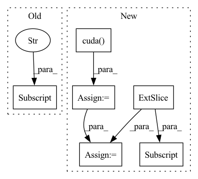

Pattern ID :7837

Before Change
igt = igt.to(device)
output = model(template, source)
loss_val = ChamferDistanceLoss()(template, output["transformed_source"])
test_loss += loss_val.item()
count += 1
After Change
igt = igt.to(device)
output = model(template, source)
identity = torch.eye(3).cuda().unsqueeze(0).repeat(template.shape[0], 1, 1)
loss_val = torch.nn.functional.mse_loss(torch.matmul(output["est_R"].transpose(2, 1), R_ab), identity) \
+ torch.nn.functional.mse_loss(output["est_t"], translation_ab[:,:,0])
cycle_loss = torch.nn.functional.mse_loss(torch.matmul(output["est_R_"].transpose(2, 1), R_ba), identity) \
+ torch.nn.functional.mse_loss(output["est_t_"], translation_ba[:,:,0])
loss_val = loss_val + cycle_loss * 0.1
test_loss += loss_val.item()
count += 1
In pattern: SUPERPATTERN
Frequency: 4
Non-data size: 6
Instances
Fragment ID: 28035786
Project Name: vinits5/learning3d
Commit Name: 9c93ae0ba4eb39cf0fbb57bbab5b3eabf7e0134a
Time: 2020-04-12
Author: vinitsarode5@gmail.com
File Name: examples/train_dcp.py
M Class Name: AnonimousClass
N Class Name: AnonimousClass
M Method Name: test_one_epoch(3)
N Method Name: test_one_epoch(3)
M Parent Class:
N Parent Class:
M File Name: examples/train_dcp.py
N File Name: examples/train_dcp.py
M Start Line: 64
M End Line: 69
N Start Line: 62
N End Line: 73
'>
Before Change
else:
img_coords = T_c2_c0[:, :, :3].bmm(cam_coords) + T_c2_c0[:, :, 3].unsqueeze(-1)
K2, K3, b = cam_calib["K2"].cuda(), cam_calib["K3"].cuda(), cam_calib["b"].cuda()
self.M, self.Q = self.set_camera_model_matrices(K2[0, 0], K2[0, 2], K2[1, 2],
K3[0, 0], K3[0, 2], K3[1, 2], b)
After Change
batch_size = cam_coords.size(0)
K2, K3 = cam_calib["K2"].cuda(), cam_calib["K3"].cuda()
T_c2_c0 = cam_calib["T_c2_c0"][:batch_size, :, :].float().cuda()
T_c3_c0 = cam_calib["T_c3_c0"][:batch_size, :, :].float().cuda()
self.b = abs(T_c3_c0.bmm(se3_inv(T_c2_c0))[0, 0, 3])
self.fl = K2[0, 0, 0]
if cam_coords.size(1) == 4:
'>
Fragment ID: 28035785
Project Name: utiasasrl/hero_radar_odometry
Commit Name: 4eb1bdf7c40f496a3cd9fb79125911fcbf880f89
Time: 2020-08-17
Author: mona.gridseth@robotics.utias.utoronto.ca
File Name: utils/stereo_camera_model.py
M Class Name: StereoCameraModel
N Class Name: StereoCameraModel
M Method Name: camera_model(3)
N Method Name: camera_model(3)
M Parent Class: nn.Module
N Parent Class: nn.Module
M File Name: utils/stereo_camera_model.py
N File Name: utils/stereo_camera_model.py
M Start Line: 141
M End Line: 154
N Start Line: 143
N End Line: 160
'>
Before Change
igt = igt.to(device)
output = model(template, source)
loss_val = ChamferDistanceLoss()(template, output["transformed_source"])
// print(loss_val.item())
// forward + backward + optimize
After Change
igt = igt.to(device)
output = model(template, source)
identity = torch.eye(3).cuda().unsqueeze(0).repeat(template.shape[0], 1, 1)
loss_val = torch.nn.functional.mse_loss(torch.matmul(output["est_R"].transpose(2, 1), R_ab), identity) \
+ torch.nn.functional.mse_loss(output["est_t"], translation_ab[:,:,0])
cycle_loss = torch.nn.functional.mse_loss(torch.matmul(output["est_R_"].transpose(2, 1), R_ba), identity) \
+ torch.nn.functional.mse_loss(output["est_t_"], translation_ba[:,:,0])
loss_val = loss_val + cycle_loss * 0.1
// print(loss_val.item())
// forward + backward + optimize
'>
Fragment ID: 28035774
Project Name: vinits5/learning3d
Commit Name: 9c93ae0ba4eb39cf0fbb57bbab5b3eabf7e0134a
Time: 2020-04-12
Author: vinitsarode5@gmail.com
File Name: examples/train_dcp.py
M Class Name: AnonimousClass
N Class Name: AnonimousClass
M Method Name: train_one_epoch(4)
N Method Name: train_one_epoch(4)
M Parent Class:
N Parent Class:
M File Name: examples/train_dcp.py
N File Name: examples/train_dcp.py
M Start Line: 92
M End Line: 97
N Start Line: 96
N End Line: 107
'>
Before Change
batch_size, height, width = disparity.size()
K2, K3, b = cam_calib["K2"].cuda(), cam_calib["K3"].cuda(), cam_calib["b"].cuda()
self.M, self.Q = self.set_camera_model_matrices(K2[0, 0], K2[0, 2], K2[1, 2],
K3[0, 0], K3[0, 2], K3[1, 2], b)
After Change
batch_size, height, width = disparity.size()
K2, K3 = cam_calib["K2"].cuda(), cam_calib["K3"].cuda()
T_c2_c0 = cam_calib["T_c2_c0"][:batch_size, :, :].float().cuda()
T_c3_c0 = cam_calib["T_c3_c0"][:batch_size, :, :].float().cuda()
self.b = abs(T_c3_c0.bmm(se3_inv(T_c2_c0))[0, 0, 3])
self.fl = K2[0, 0, 0]
self.M, self.Q = self.set_camera_model_matrices(K2[0, 0, 0], K2[0, 0, 2], K2[0, 1, 2],
'>
Fragment ID: 28035779
Project Name: utiasasrl/hero_radar_odometry
Commit Name: 4eb1bdf7c40f496a3cd9fb79125911fcbf880f89
Time: 2020-08-17
Author: mona.gridseth@robotics.utias.utoronto.ca
File Name: utils/stereo_camera_model.py
M Class Name: StereoCameraModel
N Class Name: StereoCameraModel
M Method Name: inverse_camera_model(4)
N Method Name: inverse_camera_model(4)
M Parent Class: nn.Module
N Parent Class: nn.Module
M File Name: utils/stereo_camera_model.py
N File Name: utils/stereo_camera_model.py
M Start Line: 178
M End Line: 191
N Start Line: 185
N End Line: 202